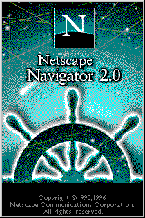
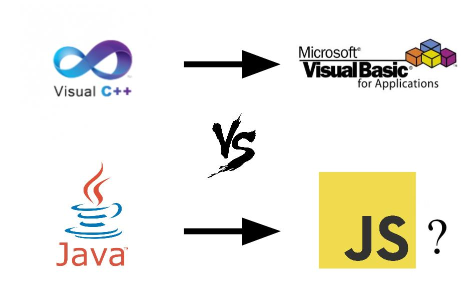
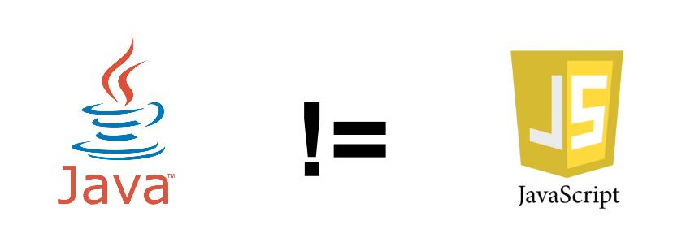

La invasión JavaScript
Conociendo al lenguaje que dominara el mundo
Origenes
Brendan Eich, necesitamos un lenguaje de programación para nuestro navegador. ¿Podes hacerlo en 10 días?

Requerimientos
- Crear un lenguaje liviano para el navegador Netscape
- Debería ser un complemento para el lenguaje Java
- Facil de usar para programadores no profecionales
- Facilmente incrustable un una página web
Restricciones
- No debe parecer una competecia para Java
- No debe estar basado en clases (para eso está Java...)
- ¿Qué tal si lo llamamos JavaScript?
¿Un hermano menor para Java?
¿En que se parece a Java?
- Sintaxis similar a ANSI C
- ...
...
Recordar
Características
- Tipado Dinamico
- Basado en Objetos
- Orientado a Prototipos
- Mecanismos de herencia basados en prototipos
- Funciones como contructores de objectos
- Funcional
- Funciones de orden superior
- Clousures
Tipado Dinamico
var a = "javascript";
typeof a; // "string"
a = 2014;
typeof a; // "number"
Basado en Objetos
var a = "JavaScript";
typeof a; "string"
a.indexOf("Script"); // 4
var b = 0.00004;
typeof b; // "number"
b.toExponential(); // "4e-5"
var v = [1,2,3];
typeof v; // "object"
v.pop(); // 3
var f = function(){ console.log("Hi JS!"); };
typeof f; // "function"
f.call(); // "Hi JS!"
Orientado a Prototipos
var a = ["a", "b", "c", "d", "e"];
a.primerElemento(); //TypeError: undefined is not a function
Object.prototype.toString.call(a) // [object Array]
Array.prototype.primerElemento = function(){
return this[0];
};
a.primerElemento(); // "a"
Funciones de Orden Superior
function saludoBuilder(saludo){
return function(ente){
return "¡" + saludo + " " + ente + "!";
}
}
var hola = saludoBuilder("hola");
hola("mundo"); // "¡hola mundo!"
Ventajas
- Facil de aprender
- Accesible para personas sin experiencia previa en programación
- No requiere configuración ni instalación de entornos de trabajo complejos
- Un navegador y editor de texto es todo lo que necesitamos para empeazar a usar JS
- Es posible hacer aplicaciones complejas sin ser un experto en el lenguaje
Desventajas

- Si bien es facil dar los primeros pasos, los aspectos avanzados del lenguaje pueden ser intrincados
- Se parece a los lenguajes procedurales y orientados a objetos descendientes de la familia C/C++, pero en realidad es un lenguaje muy distinto y eso suele general malos entendidos.
- Suele ser visto como una herramienta secundaria por la mayoría de los programadores
Primeros pasos de js en la web
Mientras que java se usaba para hacer programas complejos embebidos en una página web como Applets, Javascript se comenzo a usar para agregar a las páginas web una mayor interacción con el usuario
- Validación de formularios HTML del lado del cliente
- Animaciones simples trabajando con los estilos del DOM
- "Popups"
- Cuadros de díalogo
- Redirecciones
JavaScript y la web 2.0
Javascript se transforma en la estrella de las RIA's (Rich Internet Applications)
Flash reemplaza a Java en la creación de animaciones, juegos e interfaces complejas
La revolución AJAX
XML vs JSON
REST Web Services
AJAX, Javascript y Cross-Browsing
function Xhr(){ /* returns cross-browser XMLHttpRequest, or null if unable */
try {
return new XMLHttpRequest();
}catch(e){}
try {
return new ActiveXObject("Msxml3.XMLHTTP");
}catch(e){}
try {
return new ActiveXObject("Msxml2.XMLHTTP.6.0");
}catch(e){}
try {
return new ActiveXObject("Msxml2.XMLHTTP.3.0");
}catch(e){}
try {
return new ActiveXObject("Msxml2.XMLHTTP");
}catch(e){}
try {
return new ActiveXObject("Microsoft.XMLHTTP");
}catch(e){}
return null;
}
JQuery
- API para AJAX
- Solución de problemas de Cross-Browsing
- Selectores avanzados para manejo del DOM
- Eventos
- Animaciones
- Javascript gana popularidad entre Maquetadores y Diseñadores
Llevar el escritorio a la Web
- Interfaces de usuario Avanzadas
- Nuevas Librerías de Widgets: YUI, EXT JS
- Aplicaciones web que imitan a las de escritorio.
Yahoo User's Interface (YUI)
EXT JS
Aplicaciones web Revolucionarias
- Gmail
- Google Maps
Problemas
Problemas
- Javascript se crea en un contexto donde la web se navegaba por hipervinculos
- Cada click del usuario reiniciaba el contexto del navegador
- El script de js duraba solo unos segundos en memoria hasta que el usuario cambiaba de página
- Las aplicaciones AJAX impicaban que el usuario no se movia de la página
- Se hizo evidente que los motores de javascript no estaban preparados para el desafío
- El manejo de memoria era pobre y las aplicaciones se volvían lentas
Se necesitaba un nuevo motor de JavaScript que este a la altura de la nueva web.
Google libera el engine v8 junto con la salida del Navegador Chrome.
La llegada de HTML5
JavaScript junto con las nuevas API's de HTML5 gana la batalla a action script (Flash) y se consolida definitivamente como el lenguaje del navegador.
Nuevas API's
- Audio y Video
- WebGL
- WebWorkers
- WebSockets
- Geolocalización
- IndexedDB y localStorage
Desarrollo de juegos basados en WebGL
Single Page Application
Javascript gana terreno en el desarrollo de aplicaciones web.
Nuevos Frameworks de Arquitectura
Node.js: JavaScript llega al servidor.
Node.js es una plataforma basada en el interprete de javascript de Chrome (v8) para construir fácilmente aplicaciones de red escalables.
var http = require('http');
var server = http.createServer(function (req, res) {
res.writeHead(200, {'Content-Type': 'text/plain'});
res.end('Hola Mundo\n');
});
server.listen(1337, '127.0.0.1');
console.log('Servidor conrriendo en http://127.0.0.1:1337/');
Caracteristicas
- non-blocking I/O
- Event-Loop
Usos
- Aplicaciones Real-Time
- Mobile Rest API's
- Aplicaciones web de alta concurrencia
- Aplicaciones Javascript end-to-end
MongoDB y CouchDB: JavaScript llega a las Bases de Datos
Insertando un usuario en la colección usuarios desde la consola de MongoDB
> var nuevoUsuario = {
"nombre" : "Juan",
"apellido" : "Perez",
"dni" : 33111222
}
> db.usuarios.insert(nuevoUsuario);
Buscando un usuario por DNI
> var juan = db.usuarios.findOne({ "dni" : 33111222 });
> juan
> {
"nombre" : "Juan",
"apellido" : "Perez",
"dni" : 33111222
}
Actualizando información de un usuario
> var usuario = db.usuarios.findOne({ "dni" : 33111222 });
> usuario.nombre = "Juan Ignacio";
> usuario.edad = 25;
> db.usuarios.save(usuario);
Eliminando un usuario de la base de datos
> db.usuarios.remove( "dni" : 33111222 } )
JavaScript y el mundo Mobile
PhoneGap
Desarrollo de aplicaciones moviles multiplataforma basadas en HTML5